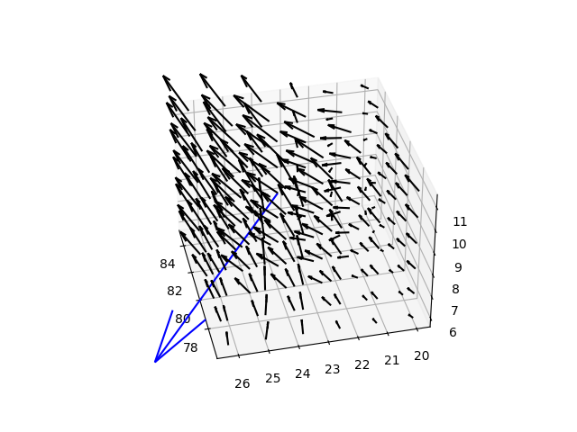

Elimizde iki türlü fonksiyon olabilir, ya skalar (tek sayı) fonksiyonu, ya da vektör fonksiyonu. Bu fonksiyonların skalar alan (scalar field) ve vector alanı (vector field) oluşturduğu söylenebilir. Alan tarifi fonksiyonların çıktısı ile alakalıdır, eğer fonksiyon çok boyutlu girdi alıp tek boyut (tek sayı) döndürüyorsa skalar alan, çok boyutlu vektör döndürüyorsa vektör alanı tanımlıyor demektir.
Mesela bir skalar alan \(f(x,y,z)\) fonksiyonu ile tanımlanıyor olabilir, ve \(f(x,y,z) = 2y^3 + 4 xz + 3x\) olabilir.
Skalar alanın gradyanı bir vektördür,
\[ \nabla f = \left[ \frac{\partial f}{\partial x}, \frac{\partial f}{\partial y}, \frac{\partial f}{\partial z} \right] \]
yani bir vektör alanı oluşturmuş oluyoruz, fonksiyon çok boyutlu sonuç donduruyor, skalar alanın gradyanı bir vektör alanı tanımlamış oluyor. Her farklı \(x,y,z\) değeri için bir vektör sonucu alıyoruz.
Fonksiyonel olarak analitik şekilde
\[ f = \left[\begin{array}{r} f_1(x,y,z) \\ f_2(x,y,z) \\ f_3(x,y,z) \end{array}\right] \]
olabilir.
Mesela skalar alan
\[ U(x,y) = \frac{1}{3} (x^4 + y^4) \qquad (1) \]
olsun,
from mpl_toolkits.mplot3d import Axes3D
fig = plt.figure()
ax = fig.add_subplot(111, projection='3d')
xx = np.linspace(-5.0,5.0,20)
yy = np.linspace(-5.0,5.0,20)
x,y = np.meshgrid(xx,yy);
U = 1/3*( (x**4) + (y**4))
ax.plot_surface(x,y,U)
plt.savefig('calc_multi_70_div_curl_lap_01.png')Gradyanı analitik olarak bulabiliriz,
\[ \nabla U = \frac{4}{3} [\begin{array}{cc} x^3 & y^3 \end{array}]^T \]
Gradyan vektör alanı [6],
u, v = 4/3*x**3, 4/3*y**3
fig, ax = plt.subplots()
ax.quiver(x,y,u,v)
ax.xaxis.set_ticks([])
ax.yaxis.set_ticks([])
ax.axis([-6, 6, -6, 6])
ax.set_aspect('equal')
plt.savefig('calc_multi_70_div_curl_lap_03.png')Üstte analitik sonucu grafikledik. Gradyanı pür sayısal olarak
hesaplayabilirdik, bu fonksiyon yaklaşık türev hesabını üç boyut için
yapıyor, gradient çağrısını kullanıyoruz,
uu,vv = np.gradient(U)
fig, ax = plt.subplots()
ax.quiver(x,y,vv,uu)
ax.xaxis.set_ticks([])
ax.yaxis.set_ticks([])
ax.axis([-6, 6, -6, 6])
ax.set_aspect('equal')
plt.savefig('calc_multi_70_div_curl_lap_04.png')
Benzer bir sonuç elde ettik.
Çizgizel Entegral (Line Integral)
Bu konu [11]’de gayet güzel bir şekilde anlatılıyor.
Uzaklaşım (Divergence)
Bu hesap \(\mathrm{div} f\), ya da \(\nabla \cdot f\) ile gösterilir. Vektör alanı uzaklaşımı,
\[ \mathrm{div} f = \left( \frac{\partial f_1}{\partial x} + \frac{\partial f_2}{\partial y} + \frac{\partial f_3}{\partial z} \right) \]
Gradyan \(\nabla\) işareti görülüyor [4, sf. 403], fakat bu notasyonel bir rahatlık sadece.
\[ \nabla \cdot f = \left( \frac{\partial }{\partial x}, \frac{\partial }{\partial y}, \frac{\partial }{\partial z} \right) \cdot \left[ f_1, f_2, f_3 \right] \]
\[ = \left( \frac{\partial }{\partial x} \right)(f_1) + \left( \frac{\partial }{\partial y} \right)(f_2) + \left( \frac{\partial }{\partial z} \right)(f_3) \]
\[ = \frac{\partial f_1}{\partial x} + \frac{\partial f_2}{\partial y} + \frac{\partial f_3}{\partial z} \]
Uzaklaşımın fiziksel yorumu bir vektör alanındaki ufak bir alanda görülen akış (flux) olabilir. Onu bir vektör alanının genişleme ya da küçülme oranı olarak ta görebiliriz. Eğer yeteri kadar ufak bir alandan çıkan vektörler girenlerden fazla / büyük ise o nokta bir kaynaktır, uzaklaşım sıfırdan büyüktür, tersi ise uzaklaşım sıfırdan küçüktür.
Örnek olarak elimizde iki boyutlu bir vektör alanı olduğunu farzedelim, \(x,y\) kordinatları \(U(x,y) = [u_1(x,y), u_2(x,y)]\) ile bir vektör döndürülüyor, mesela
\[ U(x,y) = [\cos(x + 2y), \sin(x - 2y)] \]
Bu alanın uzaklaşımı analitik olarak
\[ \mathrm{div} U = - 2\cos(x - 2y) - \sin(x + 2y) \]
Bu bize her noktada bir tek sayı değeri veriyor, o noktada akışın çıkmakta mı (kaynak -source-) yoksa yokolmakta mı (alıcı -sink) olduğunu bu sayı ile irdeleyebiliyoruz. Biz uzaklaşımı altta sayısal olarak hesapliyoruz, ve hem vektör alanını hem de uzaklaşım tek sayısını bir renk kodu ile aynı grafikte gösterirsek,
import numpy as np
import matplotlib.pyplot as plt
NY = 20; ymin = -2.; ymax = 2.
dy = (ymax -ymin )/(NY-1.)
NX = NY
xmin = -2.; xmax = 2.
dx = (xmax -xmin)/(NX-1.)
def divergence(f):
num_dims = len(f)
tmp = [np.gradient(f[i], axis=i) for i in range(num_dims)]
return np.ufunc.reduce(np.add, tmp)
y = np.array([ ymin + float(i)*dy for i in range(NY)])
x = np.array([ xmin + float(i)*dx for i in range(NX)])
x, y = np.meshgrid( x, y, indexing = 'ij', sparse = False)
Fx = np.cos(x + 2*y)
Fy = np.sin(x - 2*y)
F = [Fx, Fy]
g = divergence(F)
plt.pcolormesh(x, y, g, shading='nearest', cmap=plt.cm.get_cmap('coolwarm'))
plt.colorbar()
plt.quiver(x,y,Fx,Fy)
plt.savefig('calc_multi_70_div_curl_lap_05.png')Sonuç [7]’deki analitik hesaba yakın. Üstteki kodda
gradient ile her boyut üzerinde sayısal gradyan hesabı
yapılıyor ve sonuçlar toplanıyor. Not: vektör alanının kendisi de bir
gradyan işleminin sonucu olabilir, o noktaya nasıl gelindiğinden
bahsetmiyoruz, biz elde nereden gelmiş olursa olsun bir vektör alanı
olduğunu farz ediyoruz.
Oklara ve renklere bakarsak hakikkaten de mavi renkli bölgelere daha fazla giriş olduğundan şüphe yok, bu iyi, hesap doğru işliyor demektir. Aynı şekilde kırmızı bölglerde daha fazla kaçıs var.
Laplasyan (Laplacian)
Diyelim ki \(f\) skalar alanı iki kez türevi alınabilir halde. O zaman \(f\)’nin gradyanı \(\nabla f\) de türevi alınabilir bir vektör alanıdır, ve onun da uzaklaşımı hesaplanabilir, ve böylece bir tane daha skalar alan daha elde edilebilir [3, sf. 56]. Bu skalar alan, \(\nabla \cdot \nabla f\) sonucuna \(f\)’nin Laplasyanı ismi verilir, ve kendi sembolü de vardır \(\nabla^2 f\), bazen düz üçgen ile de gösterilebilr, \(\Delta f\).
Reel değerli bir fonksiyon \(f(x,y,z)\) için [1, sf. 178], \(f\)’nin gradyani bir vektör alanı, ve onun uzaklaşımını alıyoruz,
\[ \mathrm{div} \nabla f = \nabla \cdot \nabla = \nabla^2 f = \left( \frac{\partial }{\partial x}, \frac{\partial }{\partial y}, \frac{\partial }{\partial z} \right) \cdot \left( \frac{\partial f}{\partial x}, \frac{\partial f}{\partial y}, \frac{\partial f}{\partial z} \right) \]
\[ = \frac{\partial }{\partial x}\left(\frac{\partial f}{\partial x}\right)+ \frac{\partial }{\partial y}\left(\frac{\partial f}{\partial y}\right)+ \frac{\partial }{\partial z}\left(\frac{\partial f}{\partial z}\right) \]
\[ = \frac{\partial^2 f}{\partial x^2} + \frac{\partial^2 f}{\partial y^2} + \frac{\partial^2 f}{\partial z^2} \]
Kabaca bir tarif olarak gradyan vektörlerinin en yüksek değerlere sahip olduğu yerler değişimin en çok olduğu yönlere değil mi? Bir tepe altından tepe yönüne doğru, tepe noktasında çok yüksek değerler vardır, altta daha alçak değerler, gradyan yukarıya gösterir. Bu gradyan alanını üzerinde uzaklaşım hesaplayınca alanın her noktası için sayısal bir akış sayısı hesaplamış oluruz. “Gradyan akışının en yüksek olduğu yerler’’ bulunmuş oluyor. Laplasyan hesabı bu sebeple averajdan sapmanın en fazla olduğu noktaları mdoellemek için kullanılır.
Üstte bir operatör tanımlamış olduk, bu operatör bazen \((\mathcal{L})(x,y,..)\) ile de gösterilebilir, mesela iki boyut için
\[ (\mathcal{L})(x,y) = \frac{\partial^2 }{\partial x^2} + \frac{\partial^2 }{\partial y^2} \]
Sayısal olarak Laplasyan hesabını görelim.
Örnek
Analitik olarak biliyoruz ki (1)’in Laplasyanı
\[ \nabla^2 U(x,y) = 4 x^2 + 4 y^2 \]
foksiyonuna eşit. Bakalım sayısal olarak yaklaşık olarak aynı sonucu
alabilecek miyiz? Burada del2 çağrısı var (iyi isim, çünkü
\(\nabla\) işaretine ‘del’ denir,
‘del2’ ile onun karesi çağrıştırılıyor),
import numpy as np
def del2(M):
dx = 1
dy = 1
rows, cols = M.shape
dx = dx * np.ones ((1, cols - 1))
dy = dy * np.ones ((rows-1, 1))
mr, mc = M.shape
D = np.zeros ((mr, mc))
if (mr >= 3):
## x direction
## left and right boundary
D[:, 0] = (M[:, 0] - 2 * M[:, 1] + M[:, 2]) / (dx[:,0] * dx[:,1])
D[:, mc-1] = (M[:, mc - 3] - 2 * M[:, mc - 2] + M[:, mc-1]) \
/ (dx[:,mc - 3] * dx[:,mc - 2])
## interior points
tmp1 = D[:, 1:mc - 1]
tmp2 = (M[:, 2:mc] - 2 * M[:, 1:mc - 1] + M[:, 0:mc - 2])
tmp3 = np.kron (dx[:,0:mc -2] * dx[:,1:mc - 1], np.ones ((mr, 1)))
D[:, 1:mc - 1] = tmp1 + tmp2 / tmp3
if (mr >= 3):
## y direction
## top and bottom boundary
D[0, :] = D[0,:] + \
(M[0, :] - 2 * M[1, :] + M[2, :] ) / (dy[0,:] * dy[1,:])
D[mr-1, :] = D[mr-1, :] \
+ (M[mr-3,:] - 2 * M[mr-2, :] + M[mr-1, :]) \
/ (dy[mr-3,:] * dx[:,mr-2])
## interior points
tmp1 = D[1:mr-1, :]
tmp2 = (M[2:mr, :] - 2 * M[1:mr - 1, :] + M[0:mr-2, :])
tmp3 = np.kron (dy[0:mr-2,:] * dy[1:mr-1,:], np.ones ((1, mc)))
D[1:mr-1, :] = tmp1 + tmp2 / tmp3
return D / 4Ayrıksal Laplasyanı grafiklersek,
from del2 import del2
L = 4*del2(U);
fig = plt.figure()
ax = fig.add_subplot(111, projection='3d')
ax.plot_surface(x,y,L)
plt.savefig('calc_multi_70_div_curl_lap_02.png')
Evet, üstteki resim \(4 x^2 + 4 y^2\) gibi duruyor [5].
Dolam (Curl)
Bu kavram [12]’de anlatildi. Bir üç boyutlu vektör alanı, ve onun analitik olarak curl hesabını verelim,
import sympy
x, y, z = sympy.symbols('x y z', real=True)
pi = sympy.symbols('pi', constant=True)
Fx = sympy.sin(sympy.pi * x) * sympy.cos(sympy.pi * y) * sympy.cos(sympy.pi * z)
Fy = -sympy.cos(sympy.pi * x) * sympy.sin(sympy.pi * y) * sympy.cos(sympy.pi * z)
Fz = (sympy.sqrt(2.0 / 3.0) * sympy.cos(sympy.pi * x) * sympy.cos(sympy.pi * y) * sympy.sin(sympy.pi * z))
cx = sympy.diff(Fz, y) - sympy.diff(Fy, z)
cy = sympy.diff(Fx, z) - sympy.diff(Fz, x)
cz = sympy.diff(Fy, x) - sympy.diff(Fx, y)
i,j,k=2,2,1
x0,y0,z0 = xx[i,j,k], yy[i,j,k], zz[i,j,k]
i,j,k=1,3,1
x0,y0,z0 = xx[i,j,k], yy[i,j,k], zz[i,j,k]
c1,c2,c3 = cx.subs([(x, x0), (y, y0), (z, z0)]).evalf(),\
cy.subs([(x, x0), (y, y0), (z, z0)]).evalf(),\
cz.subs([(x, x0), (y, y0), (z, z0)]).evalf()
print ( c1,c2,c3 )0 0 3.51240736552037from mpl_toolkits.mplot3d import axes3d
fig = plt.figure()
ax = fig.gca(projection='3d')
ax.view_init(elev=21, azim=-44)
xx, yy, zz = np.meshgrid(np.arange(-0.8, 1, 0.2),
np.arange(-0.8, 1, 0.2),
np.arange(-0.8, 1, 0.8))
u = np.sin(np.pi * xx) * np.cos(np.pi * yy) * np.cos(np.pi * zz)
v = -np.cos(np.pi * xx) * np.sin(np.pi * yy) * np.cos(np.pi * zz)
w = (np.sqrt(2.0 / 3.0) * np.cos(np.pi * xx) * np.cos(np.pi * yy) * np.sin(np.pi * zz))
ax.quiver(xx, yy, zz, u, v, w, length=0.1, color = 'black')
ax.quiver(x0, y0, z0, c1, c2, c3, length=0.3, color = 'blue')
plt.savefig('calc_multi_70_div_curl_lap_11.png')Sağ el kuralından ve akıntıya bakarak bu sonucun doğru olduğunu görebiliriz.
Şimdi sayısal olarak curl kodlamasına bakalım, bu kod da
gradient çağrıları yaparak ve sonuçları işleyerek bir curl
hesabı yapıyor.
import numpy as np
import scipy.io as sio
def curl(x,y,z,u,v,w):
dx = x[0,:,0]
dy = y[:,0,0]
dz = z[0,0,:]
dummy, dFx_dy, dFx_dz = np.gradient (u, dx, dy, dz, axis=[1,0,2])
dFy_dx, dummy, dFy_dz = np.gradient (v, dx, dy, dz, axis=[1,0,2])
dFz_dx, dFz_dy, dummy = np.gradient (w, dx, dy, dz, axis=[1,0,2])
rot_x = dFz_dy - dFy_dz
rot_y = dFx_dz - dFz_dx
rot_z = dFy_dx - dFx_dy
l = np.sqrt(np.power(u,2.0) + np.power(v,2.0) + np.power(w,2.0));
m1 = np.multiply(rot_x,u)
m2 = np.multiply(rot_y,v)
m3 = np.multiply(rot_z,w)
tmp1 = (m1 + m2 + m3)
tmp2 = np.multiply(l,2.0)
av = np.divide(tmp1, tmp2)
return rot_x, rot_y, rot_z, avÖrnek veri Matlab / Octave problemlerinden iyi bilinen rüzgar verisi [10]. Alttaki kodda ufak bir bölgedeki rüzgar hızını grafikliyoruz, ve ortasında curl hesabı yapıyoruz.
from mpl_toolkits.mplot3d import axes3d
import scipy.io as sio
mat = sio.loadmat('wind.mat')
x = mat['x']; y = mat['y']; z = mat['z']
u = mat['u']; v = mat['v']; w = mat['w']
rot_x, rot_y, rot_z, av = curl(x,y,z,u,v,w)
# i,j,k etrafinda ufak bir bolgeyi grafikle
i=5;j=7;k=8;S = 3
x1 = x[i-S:i+S, j-S:j+S, k-S:k+S];
y1 = y[i-S:i+S, j-S:j+S, k-S:k+S];
z1 = z[i-S:i+S, j-S:j+S, k-S:k+S];
u1 = u[i-S:i+S, j-S:j+S, k-S:k+S];
v1 = v[i-S:i+S, j-S:j+S, k-S:k+S];
w1 = w[i-S:i+S, j-S:j+S, k-S:k+S];
fig = plt.figure()
ax = fig.gca(projection='3d')
ax.view_init(elev=36, azim=167)
ax.quiver(x1, y1, z1, u1, v1, w1, length=0.05, color = 'black')
i=5;j=7;k=8;
x0=x[i,j,k]
y0=y[i,j,k]
z0=z[i,j,k]
cx0=rot_x[i,j,k]
cy0=rot_y[i,j,k]
cz0=rot_z[i,j,k]
ax.quiver(x0, y0, z0, 0, cy0, cz0, length=1.0, color = 'blue')
plt.savefig('calc_multi_70_div_curl_lap_12.png')
Kaynaklar
[1] Corral, Vector Calculus
[2] 3Blue1Brown, Uzaklaşım (Divergence) ve Curl, Maxwell Denklemlerinin Dili, https://www.youtube.com/watch?v=8kX2f2olQao
[3] Matthews, Vector Calculus
[4] Kreyszig, Advanced Engineering Mathematics 10th Ed
[5] Mathworks del2, https://www.mathworks.com/help/matlab/ref/del2.html#bt1j8dn-5
[6] Kazarinoff, https://pythonforundergradengineers.com/quiver-plot-with-matplotlib-and-jupyter-notebooks.html
[7] Petersdorff, Example for curl and div of a 2D vector field, http://www2.math.umd.edu/~petersd/241/html/ex27b.html#4
[8] Schey, Div, Grad, Curl, All That, 4th Ed
[9] Thomas, Thomas Calculus, 11th Ed
[10] Bayramlı, Octave ile Ruzgar Verisi, wind.dat, Curl Ornekleri, https://burakbayramli.github.io/dersblog/sk/2020/09/octave-3d-wind.html
[11] Bayramlı, Cok Boyutlu Calculus, Ders 19
[12] Bayramlı, Cok Boyutlu Calculus, Ders 22